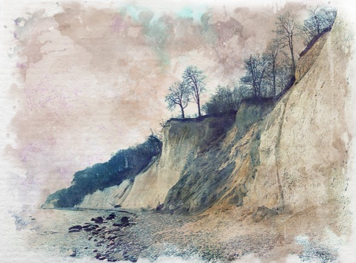

Flint
Formed by compressed sediment, flint is a dark rock that occurs mostly in chalk or limestone deposits, that when struck with iron can produce sparks, making it an ideal firestarter. It also breaks into sharp flakes when struck hard enough giving it useful primitive tool applications.